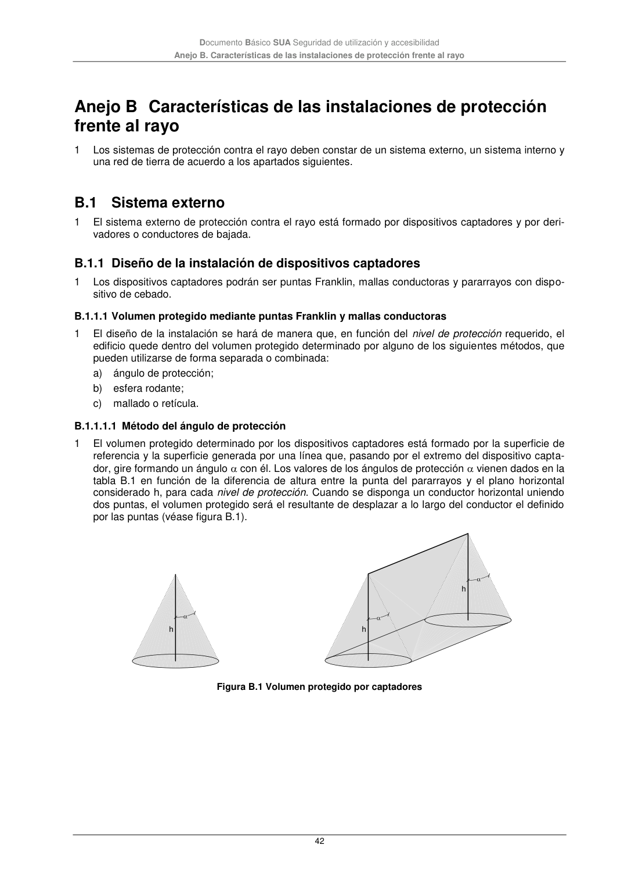

DB-SUA Seguridad de utilización y accesibilidad · edición 2022-06-14 · capa oficial
Documento DB-SUA-oficial · SHA-256 del PDF 3cfb5bbb135e8f02faebd8b844e03e8947994c18d4c9e675a7d2aa37d1cd5958
Página física 42 de 47.
Copia fiel del PDF fuente · Fuente oficial
Ficha de la disposición en la fuente oficial
Formato: Texto de la página (Markdown)
Documento Básico SUA Seguridad de utilización y accesibilidad Anejo B. Características de las instalaciones de protección frente al rayo 42 Anejo B Características de las instalaciones de protección frente al rayo 1 Los sistemas de protección contra el rayo deben constar de un sistema externo, un sistema interno y una red de tierra de acuerdo a los apartados siguientes. B.1 Sistema externo 1 El sistema externo de protección contra el rayo está formado por dispositivos captadores y por deri- vadores o conductores de bajada. B.1.1 Diseño de la instalación de dispositivos captadores 1 Los dispositivos captadores podrán ser puntas Franklin, mallas conductoras y pararrayos con dispo- sitivo de cebado. B.1.1.1 Volumen protegido mediante puntas Franklin y mallas conductoras 1 El diseño de la instalación se hará de manera que, en función del nivel de protección requerido, el edificio quede dentro del volumen protegido determinado por alguno de los siguientes métodos, que pueden utilizarse de forma separada o combinada: a) ángulo de protección; b) esfera rodante; c) mallado o retícula. B.1.1.1.1 Método del ángulo de protección 1 El volumen protegido determinado por los dispositivos captadores está formado por la superficie de referencia y la superficie generada por una línea que, pasando por el extremo del dispositivo capta- dor, gire formando un ángulo con él. Los valores de los ángulos de protección vienen dados en la tabla B.1 en función de la diferencia de altura entre la punta del pararrayos y el plano horizontal considerado h, para cada nivel de protección. Cuando se disponga un conductor horizontal uniendo dos puntas, el volumen protegido será el resultante de desplazar a lo largo del conductor el definido por las puntas (véase figura B.1). Figura B.1 Volumen protegido por captadores
